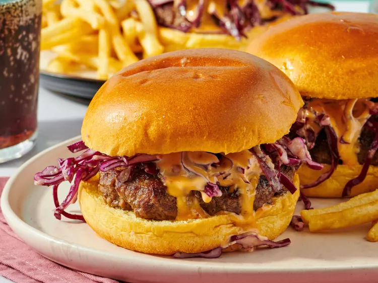

Bang Bang Burgers
Home

Description
These bang bang burgers will take your hamburger game up a notch. Beef burgers are layered with bang bang sauce and a spicy slaw made with homemade peach vinaigrette.
Trust the process—the flavors all come together and are delicious!
Ingredients
- 2 hamburger patties
- 2 brioche buns, toasted
- 1/4 small red cabbage, sliced
- red pepper flakes, to taste
Steps:
- Gather all ingredients.
- Make the bang bang sauce by combining all ingredients in a small bowl. Whisk to bring together and set aside.
- For the vinaigrette, add the peach to the base of a food processor fitted with the blade. Pour in half the vinegar, then cover and pulse to break up the peach. Add the rest of the ingredients except the oil. Process fully, then slowly pulse in the oil. Taste, then add salt and pepper as needed. Pour out of the food processor into a small bowl and set aside.
- Fry or grill burgers until no longer pink in the center, about 10 minutes. An instant-read thermometer inserted into the center should read at least 160 degrees F (70 degrees C).
- To assemble, place the sliced cabbage in a shallow dish and pour in 3 to 4 tablespoon of the vinaigrette. Taste and add red pepper flakes if desired to add some extra heat. Set aside.
- Lay the bottom of the brioche buns on a work surface. Spread the bang bang sauce liberally on each bottom bun. Place the hamburger on top of the sauce, then pile the slaw on each patty.
- Drizzle more bang bang sauce over the slaw, the top with the top bun. Enjoy!